library(tidyverse)
#> Warning: package 'tidyverse' was built under R version 4.2.3
#> Warning: package 'ggplot2' was built under R version 4.2.3
#> Warning: package 'tibble' was built under R version 4.2.3
#> Warning: package 'tidyr' was built under R version 4.2.3
#> Warning: package 'readr' was built under R version 4.2.3
#> Warning: package 'purrr' was built under R version 4.2.3
#> Warning: package 'dplyr' was built under R version 4.2.3
#> Warning: package 'stringr' was built under R version 4.2.2
#> Warning: package 'forcats' was built under R version 4.2.3
#> Warning: package 'lubridate' was built under R version 4.2.3
#> ── Attaching core tidyverse packages ───────────────────── tidyverse 2.0.0 ──
#> ✔ dplyr 1.1.2 ✔ readr 2.1.4
#> ✔ forcats 1.0.0 ✔ stringr 1.5.0
#> ✔ ggplot2 3.4.2 ✔ tibble 3.2.1
#> ✔ lubridate 1.9.2 ✔ tidyr 1.3.0
#> ✔ purrr 1.0.1
#> ── Conflicts ─────────────────────────────────────── tidyverse_conflicts() ──
#> ✖ dplyr::filter() masks stats::filter()
#> ✖ dplyr::lag() masks stats::lag()
#> ℹ Use the conflicted package (<http://conflicted.r-lib.org/>) to force all conflicts to become errors2 Data visualization
You are reading the work-in-progress second edition of R for Data Science. This chapter is largely complete and just needs final proof reading. You can find the complete first edition at https://r4ds.had.co.nz.
2.1 Introduction
“The simple graph has brought more information to the data analyst’s mind than any other device.” — John Tukey
R 有几种用于制作图形的系统，但 ggplot2 是最优雅和最多功能的之一。 ggplot2 实现了图形语法（grammar of graphics），这是一套一致的描述和构建图形的系统。 通过 ggplot2，你可以更多更快地学习一个系统，并在许多地方应用。
本章将教您如何使用 ggplot2 可视化数据。 我们将从创建一个简单的散点图（scatterplot）开始，并使用它来介绍美学映射（aesthetic mappings）和几何对象（geometric objects）– ggplot2 的基本构建块。 然后，我们将向您展示如何可视化单个变量的分布以及可视化两个或多个变量之间的关系。 最后，我们将介绍如何保存您的图形并提供故障排除提示。
2.1.1 Prerequisites
本章重点介绍 ggplot2，它是 tidyverse 中的核心包之一。 要访问本章中使用的数据集、帮助页面和函数，请运行以下命令加载 tidyverse：
这一行代码加载了核心的 tidyverse，这些包在几乎每个数据分析中都会使用。 它还会告诉您 tidyverse 中的哪些函数与 base R（或其他已加载的包）中的函数存在冲突1。
如果您运行此代码并收到 there is no package called 'tidyverse' 的错误消息，则需要先安装它，然后再次运行 library()。
install.packages("tidyverse")
library(tidyverse)您只需要安装一个包一次，但每次开始新会话时都需要加载（load）它。
除了 tidyverse 之外，我们还将使用 palmerpenguins 包，其中包含了 penguins 数据集，该数据集包含了帕尔默群岛上三个岛屿上企鹅的身体测量数据。还 有 ggthemes 包，它提供了一个适用于色盲的安全调色板。
library(palmerpenguins)
#> Warning: package 'palmerpenguins' was built under R version 4.2.2
library(ggthemes)2.2 First steps
企鹅的翼展较长的是否比翼展较短的体重更重还是更轻？ 您可能已经有了答案，但请尽量给出精确的回答。 翼展长度和体重之间的关系是怎样的？ 是正相关的吗？ 还是负相关的？ 是线性的吗？ 还是非线性的？ 这种关系是否因企鹅的物种而异？ 岛屿的差异是否会对关系产生影响？ 让我们创建可视化图表来回答这些问题。
2.2.1 The penguins data frame
您可以使用 palmerpenguins 包中的 penguins 数据框（data frame）来测试您对这些问题的回答（即 palmerpenguins::penguins）。 data frame 是一种由变量（列）和观测（行）组成的矩形集合。 penguins 包含 344 个观测值，由 Dr. Kristen Gorman 和 Palmer Station, Antarctica LTER 搜集提供2。
为了方便讨论，让我们定义一些术语： - A variable 是可以进行测量的数量、特性或属性。
A value 是在测量时 variable 所处的状态。 variable 的 value 可能会在每次测量时发生变化。
An observation 是在类似条件下进行的一组测量（通常在同一时间和同一对象上进行所有测量）。 一个 observation 会包含多个 values，每个 value 与不同的 variable 相关联。 我们有时将一个 observation 称为一个数据点。
Tabular data 是一组 values，每个 value 与一个 variable 和一个 observation 相关联。 如果每个 value 都放置在自己的”单元格”中，每个 variable 都在自己的列中，每个 observation 都在自己的行中，那么 Tabular data 就是整洁（tidy）的。
在这个案例中，variable 指的是所有企鹅的属性，observation 指的是单个企鹅的所有属性。
在控制台中键入 data frame 的名称，R 将打印出其内容的预览。 请注意，预览的顶部显示着 tibble。 在 tidyverse 中，我们使用特殊的 data frames 称为 tibbles，您很快将学到更多关于它的知识。
penguins
#> # A tibble: 344 × 8
#> species island bill_length_mm bill_depth_mm flipper_length_mm
#> <fct> <fct> <dbl> <dbl> <int>
#> 1 Adelie Torgersen 39.1 18.7 181
#> 2 Adelie Torgersen 39.5 17.4 186
#> 3 Adelie Torgersen 40.3 18 195
#> 4 Adelie Torgersen NA NA NA
#> 5 Adelie Torgersen 36.7 19.3 193
#> 6 Adelie Torgersen 39.3 20.6 190
#> # ℹ 338 more rows
#> # ℹ 3 more variables: body_mass_g <int>, sex <fct>, year <int>该 data frame 包含 8 列。 如果想要以另一种视图查看所有变量和每个变量的前几个观察值，请使用 glimpse() 函数。 或者，如果您在 RStudio 中运行，请使用 View(penguins) 打开一个交互式数据查看器。
glimpse(penguins)
#> Rows: 344
#> Columns: 8
#> $ species <fct> Adelie, Adelie, Adelie, Adelie, Adelie, Adelie, A…
#> $ island <fct> Torgersen, Torgersen, Torgersen, Torgersen, Torge…
#> $ bill_length_mm <dbl> 39.1, 39.5, 40.3, NA, 36.7, 39.3, 38.9, 39.2, 34.…
#> $ bill_depth_mm <dbl> 18.7, 17.4, 18.0, NA, 19.3, 20.6, 17.8, 19.6, 18.…
#> $ flipper_length_mm <int> 181, 186, 195, NA, 193, 190, 181, 195, 193, 190, …
#> $ body_mass_g <int> 3750, 3800, 3250, NA, 3450, 3650, 3625, 4675, 347…
#> $ sex <fct> male, female, female, NA, female, male, female, m…
#> $ year <int> 2007, 2007, 2007, 2007, 2007, 2007, 2007, 2007, 2…penguins 中的变量包括：
species: a penguin’s species (Adelie, Chinstrap, or Gentoo).flipper_length_mm: length of a penguin’s flipper, in millimeters.body_mass_g: body mass of a penguin, in grams.
要了解更多关于 penguins 的信息，请运行 ?penguins 打开其帮助页面。
2.2.2 Ultimate goal
在本章中，我们的最终目标（ultimate goal）是重新创建以下可视化图表，显示企鹅的翼展长度（flipper lengths）和体重（body masses）之间的关系，并考虑企鹅的物种（species）差异。
![A scatterplot of body mass vs. flipper length of penguins, with a best fit line of the relationship between these two variables overlaid. The plot displays a positive, fairly linear, and relatively strong relationship between these two variables. Species (Adelie, Chinstrap, and Gentoo) are represented with different colors and shapes. The relationship between body mass and flipper length is roughly the same for these three species, and Gentoo penguins are larger than penguins from the other two species.](data-visualize_files/figure-html/unnamed-chunk-7-1.png)
2.2.3 Creating a ggplot
让我们逐步重新创建这个图表。
在 ggplot2 中，你可以使用函数 ggplot() 开始一个绘图过程，定义一个绘图对象，然后向其添加图层（layers）。 ggplot() 的第一个参数是要在图表中使用的数据集（dataset），因此 ggplot(data = penguins) 创建了一个空图表（empty graph），准备展示 penguins 数据集，但由于我们尚未告诉它如何进行可视化，所以目前它是空的。 这并不是一个非常令人兴奋的图表，但你可以将其看作是一个空白的画布，你将在其上绘制剩下的图层。
ggplot(data = penguins)接下来，我们需要告诉 ggplot() 如何将数据的信息进行可视化表示。 ggplot() 函数的 mapping 参数定义了数据集中的变量如何映射到图表的视觉属性（aesthetics）。 mapping 参数总是在 aes() 函数中定义，aes() 函数的 x 和 y 参数指定要映射到 x 轴和 y 轴的变量。 目前，我们仅将翼展长度（flipper length）映射到 x aesthetic，将体重（body mass）映射到 y aesthetic。 ggplot2 会在 data 参数中寻找映射的变量，此处为 penguins 数据集。
下面的图展示了添加这些映射后的结果。
我们的空白画布现在具有了更多的结构 – 可以清楚地看到翼展长度（flipper lengths）将显示在 x-axis 上，体重（body masses）将显示在 y-axis 上。 但是企鹅的观测值还没有显示在图表上。 这是因为我们在代码中尚未明确指定如何在图表上表示数据框中的观测值。
为了实现这一点，我们需要定义一个几何对象（geom）：用于表示数据的图表中的几何对象。 在 ggplot2 中，可以使用以 geom_ 开头的函数来获得这些几何对象。 人们通常通过图表使用的几何对象类型来描述图表。 例如，柱状图使用柱状几何对象（geom_bar()），折线图使用线条几何对象（geom_line()），箱线图使用箱线几何对象（geom_boxplot()），散点图使用点几何对象（geom_point()），等等。
函数 geom_point() 将一层点添加到您的图表中，从而创建一个散点图。 ggplot2 提供了许多不同类型的几何函数，每个函数都可以向图表添加不同类型的图层（layer）。 在本书中，您将学习到许多不同的几何函数，特别是在 Chapter 10 中。
ggplot(
data = penguins,
mapping = aes(x = flipper_length_mm, y = body_mass_g)
) +
geom_point()
#> Warning: Removed 2 rows containing missing values (`geom_point()`).
现在我们有了一个看起来像是”散点图”的图表。 它还不完全符合我们的”最终目标”图表，但使用这个图表，我们可以开始回答我们探索的问题：“翼展长度（flipper length）和体重（body mass）之间的关系是什么样的？” 这个关系似乎是正向的（随着翼展长度（flipper length）的增加，体重（body mass）也增加），相当线性（点围绕在一条线附近而不是曲线上），并且中等强度（这条线附近没有太多的散点）。 翼展较长的企鹅通常在体重上也较大。
在我们为这个图表添加更多图层之前，让我们暂停一下并回顾一下我们收到的警告信息（warning message）：
Removed 2 rows containing missing values (
geom_point()).
我们看到这个警告信息是因为我们的数据集中有两个企鹅的体重和/或翼展长度值缺失，而 ggplot2 没有办法在图表上表示它们，因为需要同时具备这两个值。 与 R 一样，ggplot2 遵循这样的理念：缺失值永远不应该悄悄地丢失。 这种警告通常是您在处理实际数据时最常见的警告之一 – 缺失值是一个非常常见的问题，在本书中您将在 Chapter 19 中学到更多相关知识。 在本章的其余图表中，我们将禁止显示这个警告信息，以免在每个图表旁边都打印出来。
2.2.4 Adding aesthetics and layers
散点图对于显示两个数值变量之间的关系非常有用，但是对于两个变量之间的任何明显关系，保持怀疑态度并询问是否存在其他变量来解释或改变这种明显关系的性质总是一个好主意。 例如，翼展长度（flipper length）和体重（body mass）之间的关系是否因物种（species）而异？ 让我们将物种（species）信息加入到我们的图表中，看看这是否揭示了这些变量之间明显关系的其他洞察。 我们将使用不同颜色的点来表示不同的物种（species）。
为了实现这一点，我们需要修改 aesthetic 或 geom 部分吗？ 如果你猜到了”in the aesthetic mapping, inside of aes()“，那么你已经开始掌握使用 ggplot2 创建数据可视化的方法了！ 如果没有，不用担心。 在本书中，你将制作更多的 ggplots，并有更多的机会在制作图表时检验你的直觉。
ggplot(
data = penguins,
mapping = aes(x = flipper_length_mm, y = body_mass_g, color = species)
) +
geom_point()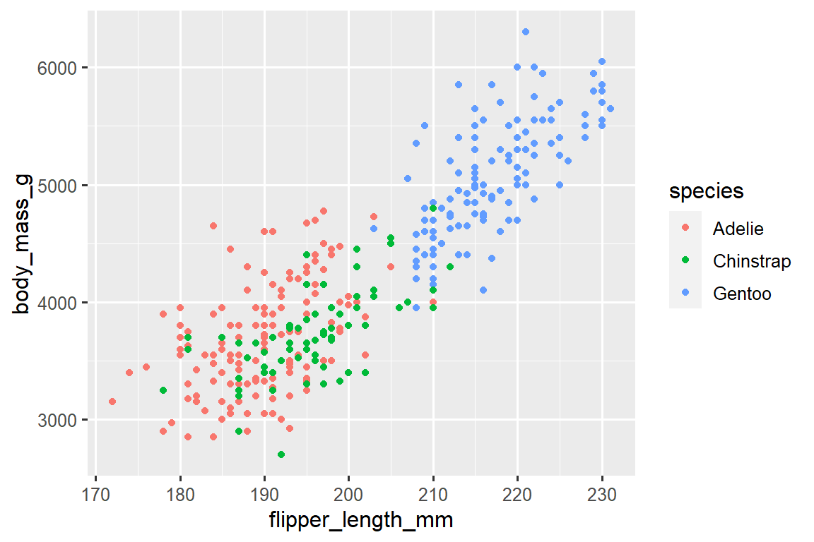
当将一个分类变量映射到一个 aesthetic 时，ggplot2 会自动为每个唯一的变量水平（每个物种）分配一个唯一的 aesthetic 值（这里是唯一的 color），这个过程被称为缩放（scaling）。 ggplot2 还会添加一个图例（legend），解释哪些值对应于哪些水平。
现在让我们添加一个额外的图层：一个显示体重（body mass）和翼展长度（flipper length）之间关系的平滑曲线。 在继续之前，请回顾上面的代码，并思考如何将其添加到我们现有的图表中。
由于这是一个表示数据的新几何对象，我们将在我们的 point geom 之上添加一个新的几何层：geom_smooth()。 我们将通过 method = "lm" 指定使用线性模型（linear model）来绘制最佳拟合线。
ggplot(
data = penguins,
mapping = aes(x = flipper_length_mm, y = body_mass_g, color = species)
) +
geom_point() +
geom_smooth(method = "lm")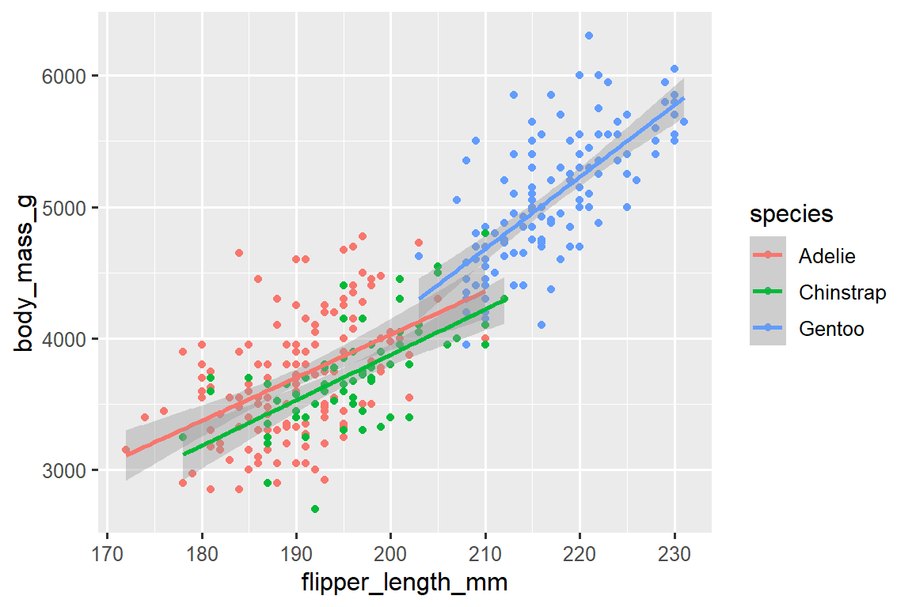
我们成功地添加了线条，但是这个图形看起来与 Section 2.2.2 提供的图形不同，Section 2.2.2 的图形只有一条线表示整个数据集，而不是每个企鹅物种都有独立的线条。
当在 ggplot() 中定义 aesthetic mappings 时，在全局级别（global level）上，它们会传递给绘图的每个后续几何层（geom layers）。 然而，ggplot2 中的每个几何函数也可以接受一个 mapping 参数，该参数允许在局部级别（local level）上进行 aesthetic mappings，并将其添加到从全局级别继承的映射中。 由于我们希望点的颜色根据物种进行着色，但不希望将线条分开显示，所以我们应该仅对 geom_point() 指定 color = species。
ggplot(
data = penguins,
mapping = aes(x = flipper_length_mm, y = body_mass_g)
) +
geom_point(mapping = aes(color = species)) +
geom_smooth(method = "lm")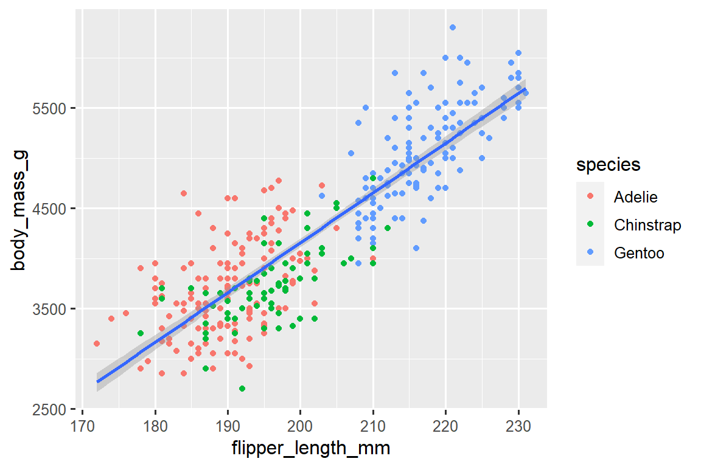
太棒了！ 我们已经接近我们的最终目标，尽管还不完美。 我们仍然需要为每个企鹅物种使用不同的形状，并改进标签。
在绘图中仅使用颜色来表示信息通常不是一个好主意，因为由于色盲或其他色觉差异，人们对颜色的感知有所不同。 因此，除了颜色之外，我们还可以将 species 映射到 shape aesthetic 上。
ggplot(
data = penguins,
mapping = aes(x = flipper_length_mm, y = body_mass_g)
) +
geom_point(mapping = aes(color = species, shape = species)) +
geom_smooth(method = "lm")请注意，图例（legend）会自动更新以反映点的不同形状。
最后，我们可以使用 labs() 函数在新的图层中改进我们绘图的标签。 labs() 的一些参数可能是不言自明的：title 添加标题，subtitle 添加副标题到绘图中。 其他参数与美学映射相匹配，x 是 x 轴标签，y 是 y 轴标签，color 和 shape 定义图例的标签。 此外，我们可以使用 ggthemes 包中的 scale_color_colorblind() 函数改进颜色调色板，使其适合色盲人士使用。
ggplot(
data = penguins,
mapping = aes(x = flipper_length_mm, y = body_mass_g)
) +
geom_point(aes(color = species, shape = species)) +
geom_smooth(method = "lm") +
labs(
title = "Body mass and flipper length",
subtitle = "Dimensions for Adelie, Chinstrap, and Gentoo Penguins",
x = "Flipper length (mm)", y = "Body mass (g)",
color = "Species", shape = "Species"
) +
scale_color_colorblind()![A scatterplot of body mass vs. flipper length of penguins, with a line of best fit displaying the relationship between these two variables overlaid. The plot displays a positive, fairly linear, and relatively strong relationship between these two variables. Species (Adelie, Chinstrap, and Gentoo) are represented with different colors and shapes. The relationship between body mass and flipper length is roughly the same for these three species, and Gentoo penguins are larger than penguins from the other two species.](data-visualize_files/figure-html/unnamed-chunk-15-1.png)
我们最终有了一个完全符合我们”最终目标”的图！
2.2.5 Exercises
penguins有多少行（rows）？ 有多少列（columns）？penguins数据框中的bill_depth_mm变量描述了什么？ 请阅读?penguins的帮助文档来获取答案。创建一个
bill_depth_mmvs.bill_length_mm的散点图。 也就是说，在 y-axis 上绘制bill_depth_mm，在 x-axis 上绘制bill_length_mm。 描述这两个变量之间的关系。如果你绘制
speciesvs.bill_depth_mm的散点图，会发生什么？ 选择什么样的几何图形可能更好？-
为什么下面的代码会出错，如何修复它？
ggplot(data = penguins) + geom_point() 在
geom_point()中，na.rm参数的作用是什么？ 这个参数的默认值是什么？ 创建一个散点图，并成功地将该参数设置为TRUE。在前面绘制的图中添加以下说明：“Data come from the palmerpenguins package.” 提示：查看
labs()的文档。-
重新创建以下可视化图形。
bill_depth_mm应该映射到哪个美学属性？ 这个映射是应该在全局级别（global level）还是几何级别（geom level）上完成？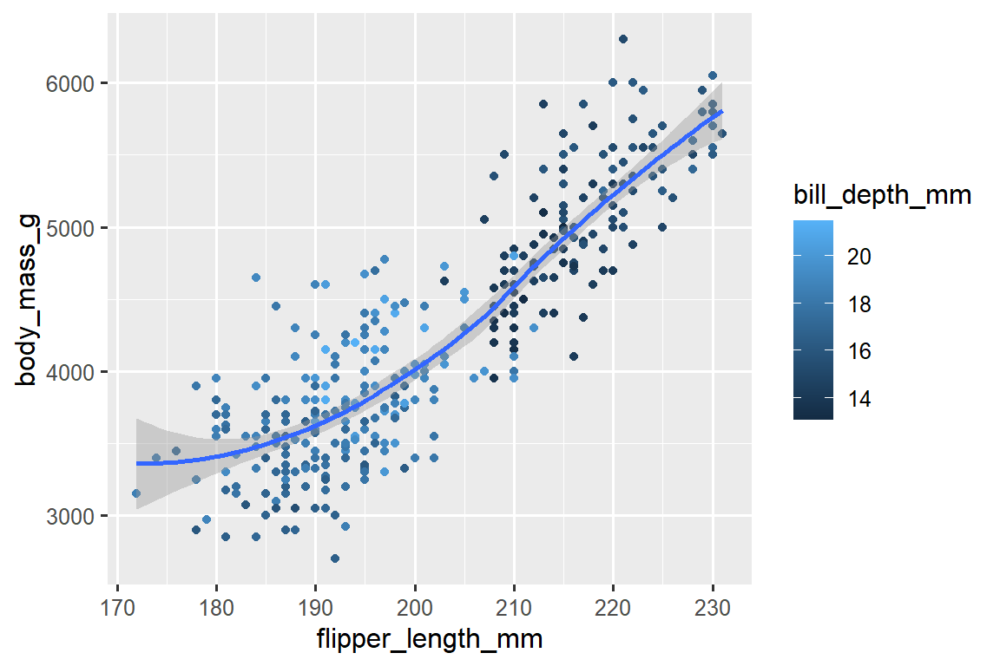
-
在脑海中运行此代码并预测输出结果。 然后，在 R 中运行代码并检查您的预测。
ggplot( data = penguins, mapping = aes(x = flipper_length_mm, y = body_mass_g, color = island) ) + geom_point() + geom_smooth(se = FALSE) -
这两张图看起来会不一样吗？为 什么/为什么不？
ggplot( data = penguins, mapping = aes(x = flipper_length_mm, y = body_mass_g) ) + geom_point() + geom_smooth() ggplot() + geom_point( data = penguins, mapping = aes(x = flipper_length_mm, y = body_mass_g) ) + geom_smooth( data = penguins, mapping = aes(x = flipper_length_mm, y = body_mass_g) )
2.3 ggplot2 calls
随着我们从这些介绍性部分继续前进，我们将过渡到 ggplot2 代码的更简洁的表达。 到目前为止，我们一直非常明确，这在学习过程中是很有帮助的：
ggplot(
data = penguins,
mapping = aes(x = flipper_length_mm, y = body_mass_g)
) +
geom_point()通常，函数的前一个或两个参数非常重要，你应该熟记于心。 ggplot() 函数的前两个参数是 data 和 mapping，在本书的其余部分，我们不再提供这些参数的名称。 这样做可以节省输入的工作量，并通过减少额外文本的数量，更容易看出绘图之间的区别。 这是一个非常重要的编程问题，在 Chapter 26 中我们会再次涉及到这个问题。
对先前的绘图进行更简洁的重写可以得到：
ggplot(penguins, aes(x = flipper_length_mm, y = body_mass_g)) +
geom_point()在将来，您还将学习使用管道操作符 |> 来创建该绘图，如下所示：
penguins |>
ggplot(aes(x = flipper_length_mm, y = body_mass_g)) +
geom_point()2.4 Visualizing distributions
可视化变量的分布方式取决于变量的类型：分类变量或数值变量。
2.4.1 A categorical variable
如果一个变量只能取一小组值中的一个，则该变量是分类变量（categorical）。 要检查分类变量的分布情况，可以使用条形图。 条形图的高度显示了每个 x 值出现的观测次数。
在具有无序级别的分类变量的条形图中，例如上面的企鹅物种（species），通常最好根据它们的频率重新排序条形。 为此，需要将变量转换为因子（factor）（R 如何处理分类数据），然后重新排序该因子的级别（levels）。
ggplot(penguins, aes(x = fct_infreq(species))) +
geom_bar()
您将在 Chapter 17 中进一步了解有关因子（factors）和处理因子的函数（如上面所示的 fct_infreq()）的知识。
2.4.2 A numerical variable
如果一个变量可以取一系列广泛的数值，并且可以对这些数值进行加减或求平均，那么该变量就是数值变量（numerical）。 数值变量可以是连续的（continuous）或离散的（discrete）。
直方图（histogram）是一种常用的连续变量分布可视化方法。
ggplot(penguins, aes(x = body_mass_g)) +
geom_histogram(binwidth = 200)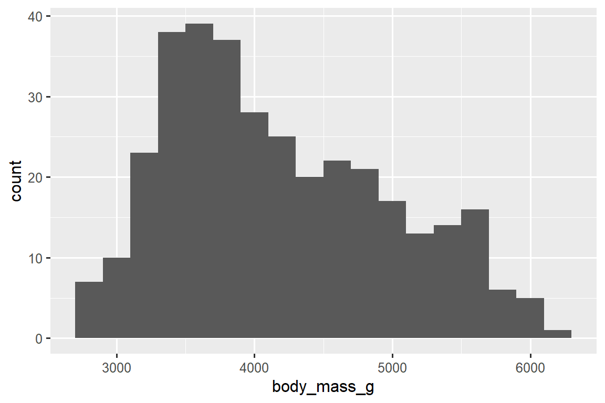
直方图将 x-axis 均匀地分成多个区间（bins），并使用条的高度显示落入每个区间的观测次数。 在上面的图中，最高的条表示有 39 个观测值的 body_mass_g 值介于 3,500 到 3,700 克之间，这个区间是条的左右边缘。
您可以使用 binwidth 参数设置直方图中的区间宽度，该参数以 x 变量的单位进行测量。 在使用直方图时，应该尝试不同的区间宽度，因为不同的区间宽度可以展现不同的模式。 在下面的图中，区间宽度为 20 太窄了，导致有太多的条，使得难以确定分布的形状。 类似地，区间宽度为 2,000 太大了，导致所有的数据都被分到了只有三个条中，也难以确定分布的形状。 区间宽度为 200 提供了一个合理的平衡点。
ggplot(penguins, aes(x = body_mass_g)) +
geom_histogram(binwidth = 20)
ggplot(penguins, aes(x = body_mass_g)) +
geom_histogram(binwidth = 2000)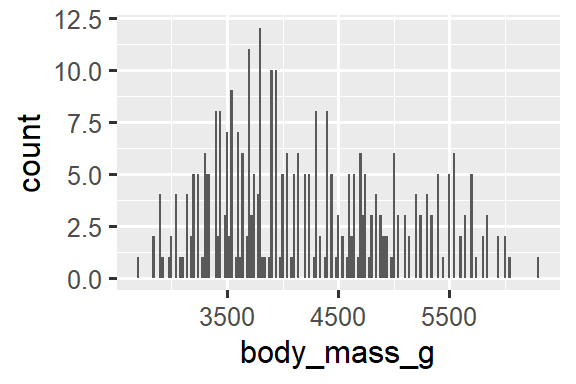

一种用于可视化数值变量分布的替代方法是密度图（density plot）。 密度图是直方图的平滑版本，特别适用于连续数据，这些数据来自于一个平滑分布。 我们不会详细讨论 geom_density() 如何估计密度（您可以在函数文档中阅读更多相关信息），但我们可以通过类比来解释绘制密度曲线的过程。 想象一个由木块组成的直方图。 然后，想象一根煮熟的意大利面条放在上面。 面条垂挂在木块上的形状可以被视为密度曲线的形状。 它展示的细节比直方图少，但可以更容易地快速了解分布的形状，特别是关于峰值和偏斜度方面的特征。
ggplot(penguins, aes(x = body_mass_g)) +
geom_density()
#> Warning: Removed 2 rows containing non-finite values (`stat_density()`).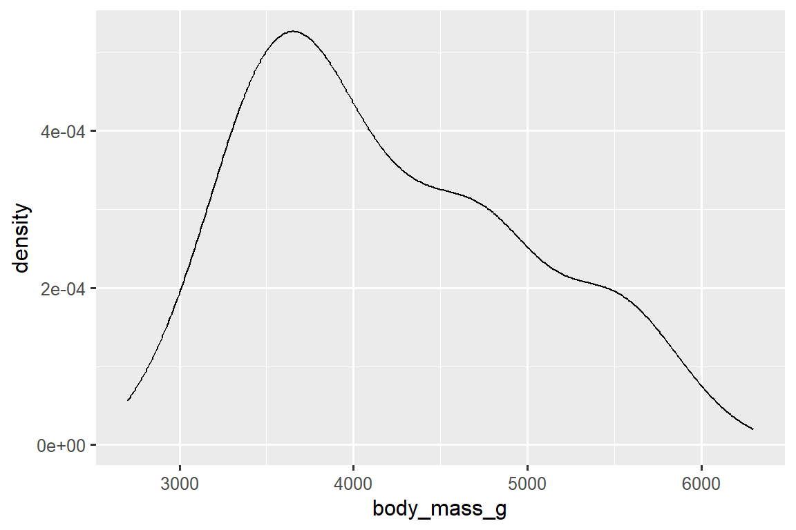
2.4.3 Exercises
创建一个关于
penguins数据集中的species变量的条形图（bar plot），将species分配给yaesthetic。 这个图与之前的图有何不同？-
下面两个图形有何不同？
color和fill这两个美学映射中，哪一个更适合改变条形图的颜色？ geom_histogram()中的bins参数有什么作用？在加载 tidyverse 包时，可以使用
diamonds数据集中的carat变量创建一个直方图（histogram）。 尝试使用不同的区间宽度（binwidths）来观察结果。 哪个区间宽度（binwidths）可以显示出最有趣的模式？
2.5 Visualizing relationships
要可视化一个关系（relationship），我们至少需要将两个变量映射到绘图的 aesthetics 中。 在接下来的章节中，您将学习常用的用于可视化两个或多个变量之间关系的图表以及用于创建这些图表的几何对象（geoms）。
2.5.1 A numerical and a categorical variable
要可视化数值变量和分类变量之间的关系，我们可以使用并列箱线图。 箱线图（boxplot）是一种用于描述分布位置（百分位数）的视觉工具。 它还可以用于识别潜在的异常值（outliers）。 如 Figure 2.1 所示，每个箱线图由以下几部分组成：
一个 box，用于表示数据的中间一半的范围，也就是四分位距（IQR），从分布的第 25 个百分位数延伸到第 75 个百分位数。 box 的中间有一条线，显示分布的中位数，即第 50 个百分位数。 这三条线可以让您了解分布的扩展程度以及分布是否关于中位数对称或倾斜于一侧。
用于显示位于 box 边缘 1.5 倍 IQR 之外的观测值的可视化点。 这些异常点是不寻常的，因此会单独绘制出来。
从 box 的每一端延伸出一条线（或者称为 whisker），并延伸到分布中最远的非异常点。

让我们使用 geom_boxplot() 来查看不同物种（species）的体重（body mass）分布：
ggplot(penguins, aes(x = species, y = body_mass_g)) +
geom_boxplot()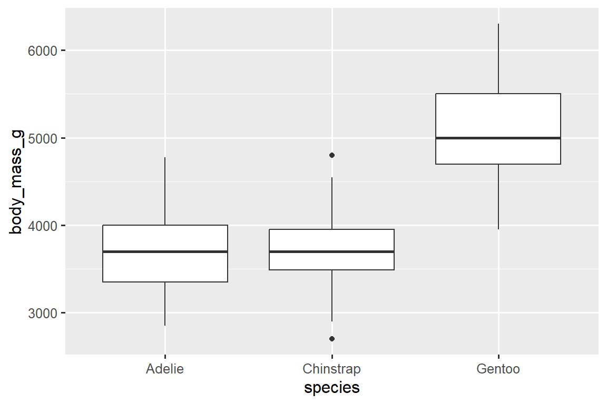
或者，我们可以使用 geom_density() 创建密度图（density plots）。
ggplot(penguins, aes(x = body_mass_g, color = species)) +
geom_density(linewidth = 0.75)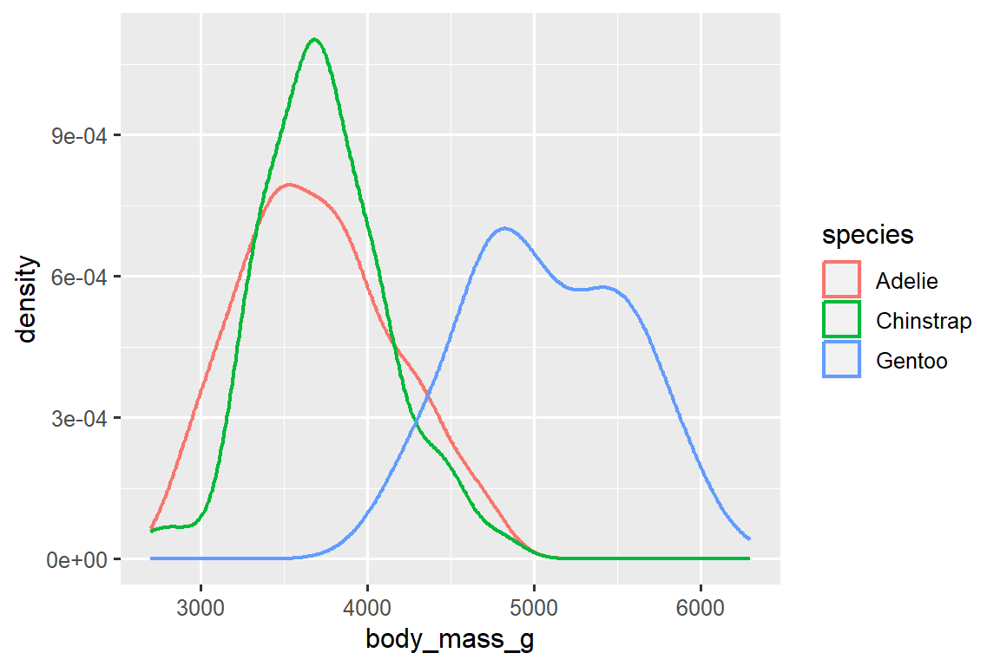
我们还使用 linewidth 参数自定义了线条的粗细，以使其在背景中更加突出。
此外，我们可以将 species 映射到 color 和 fill aesthetics，并使用 alpha aesthetic 为填充的密度曲线添加透明度。 这个 aesthetic 的取值范围在 0（完全透明）和 1（完全不透明）之间。 在下面的图中，它被设置为 0.5。
ggplot(penguins, aes(x = body_mass_g, color = species, fill = species)) +
geom_density(alpha = 0.5)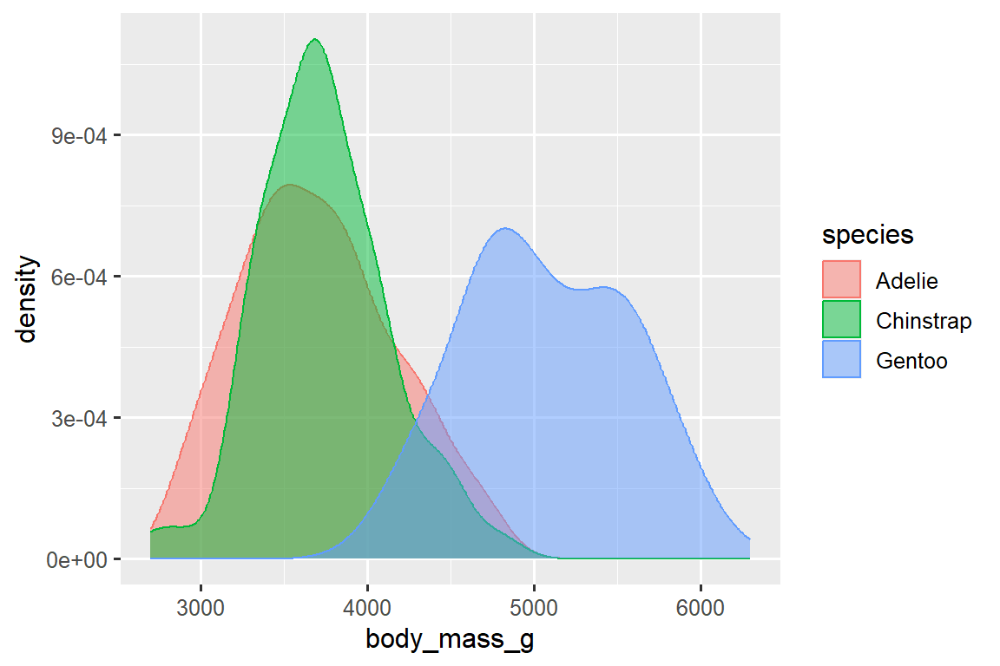
请注意我们在这里使用的术语：
- 如果我们希望由变量的值决定该美学属性的视觉特征的变化，我们会将变量映射（map）到美学属性。
- 否则，我们会设置（set）美学属性的值。
2.5.2 Two categorical variables
我们可以使用堆叠条形图（stacked bar plots）来可视化两个分类变量之间的关系。 例如，以下两个堆叠条形图都显示了 island 和 species 之间的关系，具体而言，可视化了每个岛上 species 的分布。
第一个图显示了每个岛上各种企鹅物种的频率。 频率图显示在每个岛上，Adelie 的数量是相等的。 但我们无法很好地了解每个岛内的百分比分布情况。
第二个图是一个相对频率图，通过在 geom 中设置 position = "fill" 创建，它对比较跨岛屿的物种分布更有用，因为它不受岛屿上企鹅数量不均衡的影响。 使用这个图表，我们可以看到 Gentoo 企鹅全部生活在 Biscoe 岛上，并占该岛企鹅总数的大约 75％，Chinstrap 企鹅全部生活在 Dream 岛上，并占该岛企鹅总数的大约 50％，而 Adelie 企鹅分布在所有三个岛屿上，并占据 Torgersen 岛上所有的企鹅。

在创建这些条形图时，我们将要分隔成条的变量映射到 x aesthetic，将用于改变条内颜色的变量映射到 fill aesthetic。
2.5.3 Two numerical variables
到目前为止，你已经学习了使用 geom_point() 创建散点图和使用 geom_smooth() 创建平滑曲线来可视化两个数值变量之间的关系。 散点图可能是最常用的用于可视化两个数值变量之间关系的图表之一。
ggplot(penguins, aes(x = flipper_length_mm, y = body_mass_g)) +
geom_point()
2.5.4 Three or more variables
正如我们在 Section 2.2.4 中所看到的，我们可以通过将它们 mapping 到其他 aesthetics 来将更多变量融入到图表中。 例如，在下面的散点图中，点的颜色代表物种（species），点的形状代表岛屿（islands）。
ggplot(penguins, aes(x = flipper_length_mm, y = body_mass_g)) +
geom_point(aes(color = species, shape = island))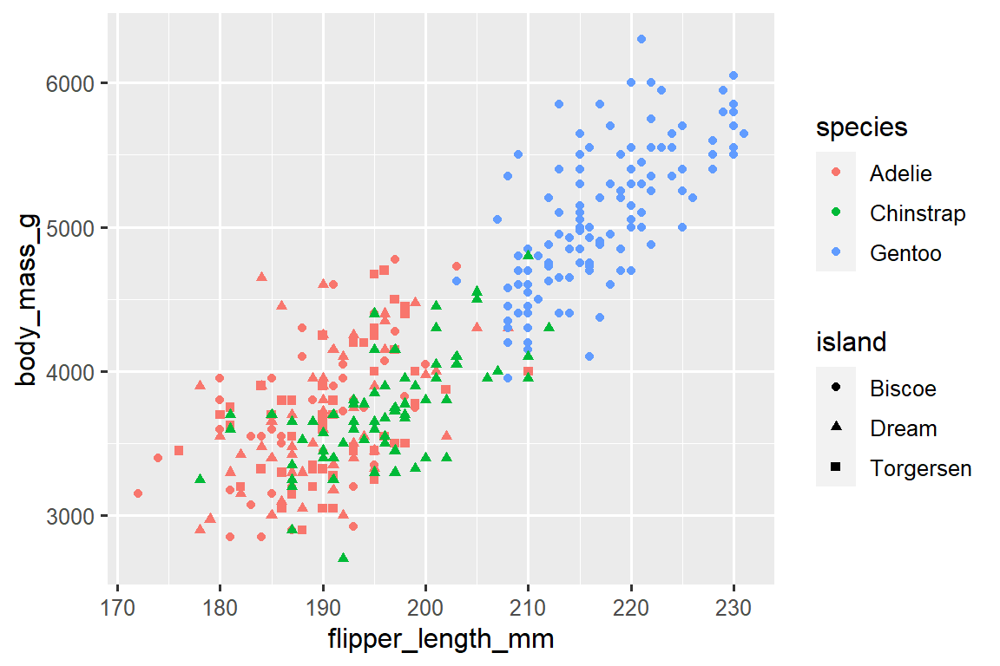
然而，如果将过多的 aesthetic mappings 添加到图表中，会使其变得杂乱且难以理解。 另一种方法，特别适用于分类变量，是将图表分割为面板（facets），每个面板显示数据的一个子集。
要通过单个变量进行面板化，可以使用 facet_wrap() 函数。 facet_wrap() 的第一个参数是一个公式3，可以使用 ~ 后跟一个变量名来创建。 传递给 facet_wrap() 的变量应该是分类变量。
ggplot(penguins, aes(x = flipper_length_mm, y = body_mass_g)) +
geom_point(aes(color = species, shape = species)) +
facet_wrap(~island)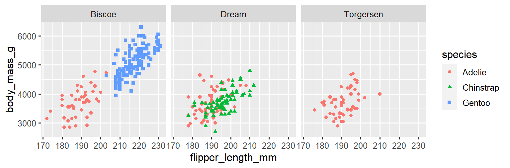
您将在 Chapter 10 中学习到许多其他用于可视化变量分布和它们之间关系的几何对象（geoms）。
2.5.5 Exercises
根据 ggplot2 软件包中捆绑的
mpg数据框，该数据框包含了美国环境保护署收集的 234 个观测数据，涵盖了 38 个汽车型号。 在mpg数据框中，哪些变量是分类变量？ 哪些变量是数值变量？ （提示：输入?mpg来阅读数据集的文档。）当您运行?mpg时，如何查看这些信息？使用
mpg数据框创建一个hwyvs.displ的散点图。 然后，将第三个数值变量映射到color、size、color和size以及shape。 这些 aesthetics 在分类变量和数值变量上的行为有何不同？在
hwyvs.displ的散点图中，如果将第三个变量映射到linewidth会发生什么？如果将同一个变量映射到多个 aesthetics 会发生什么？
创建一个
bill_depth_mmvs.bill_length_mm的散点图，并按照species对点进行着色。 将点按物种（species）着色有关于这两个变量之间关系的什么信息？ 通过对物种（species）进行分面绘图（faceting）又会发现什么？-
为什么下面的代码会产生两个独立的图例（legends）？ 如何修复它以合并这两个图例？
ggplot( data = penguins, mapping = aes( x = bill_length_mm, y = bill_depth_mm, color = species, shape = species ) ) + geom_point() + labs(color = "Species") -
创建下面的两个堆叠条形图。 第一个图可以回答哪个问题？ 第二个图可以回答哪个问题？
2.6 Saving your plots
一旦你创建了一个图形，你可能希望将其保存为图像文件以在其他地方使用。 这时可以使用 ggsave() 函数来将最近创建的图形保存到磁盘中。
ggplot(penguins, aes(x = flipper_length_mm, y = body_mass_g)) +
geom_point()
ggsave(filename = "penguin-plot.png")这将把你的图形保存到你的工作目录中，你会在 Chapter 7 中更详细地了解到这个概念。
如果你没有指定 width 和 height 参数，它们将从当前绘图设备的尺寸中获取。 为了获得可重现的代码，建议你指定这些参数。 你可以在文档中了解更多关于 ggsave() 函数的信息。
然而，通常我们建议使用 Quarto 来组织最终的报告。Q uarto 是一个可重复使用的创作系统，允许你将代码和文字交织在一起，并自动将图形包含在你的写作中。 你将在 Chapter 29 中了解更多关于 Quarto 的内容。
2.6.1 Exercises
-
运行以下代码行。 两个图中的哪一个保存为
mpg-plot.png？ 为什么？ 您需要在上面的代码中更改什么才能将绘图保存为 PDF 而不是 PNG？ 你如何找出哪些类型的图像文件可以在
ggsave()中工作？
2.7 Common problems
当您开始运行 R 代码时，可能会遇到一些问题。不 要担心，这种情况对每个人都会发生。我 们多年来一直在编写 R 代码，但每天我们仍然会写出一开始就无法正常工作的代码！
首先，仔细比较您正在运行的代码与书中的代码。 R 非常挑剔，一个错位的字符可能会产生完全不同的结果。 确保每个 ( 都与一个 ) 匹配，每个 " 都与另一个 " 配对。 有时候您运行代码后什么都没有发生。 检查您控制台的左侧：如果是 +，这意味着 R 认为您输入的不是完整的表达式，它正在等待您完成。 在这种情况下，通常通过按 ESCAPE 键中止处理当前命令，然后重新开始会比较容易。
在创建 ggplot2 图形时，一个常见的问题是将 + 放在错误的位置：它必须放在行尾，而不是行首。换 句话说，请确保您没有意外地编写了以下这种代码：
ggplot(data = mpg)
+ geom_point(mapping = aes(x = displ, y = hwy))如果您仍然遇到困难，请尝试获取帮助。 您可以在控制台中运行 ?function_name 来获取有关任何 R 函数的帮助，或者在 RStudio 中选中函数名并按下 F1 键。 如果帮助信息似乎不太有用，不要担心，可以跳到示例部分，寻找与您尝试做的事情相匹配的代码示例。
如果这样还无法解决问题，请仔细阅读错误消息。 有时候答案就埋在错误消息中！ 但是，当您刚开始接触 R 时，即使答案在错误消息中，您可能还不知道如何理解它。 另一个很好的工具是 Google：尝试搜索错误消息，因为很可能有其他人遇到了同样的问题，并在网上寻求了帮助。
2.8 Summary
在本章中，您学习了使用 ggplot2 进行数据可视化的基础知识。 我们从支持 ggplot2 的基本思想开始：可视化是从数据中的变量到 aesthetic（如 position、color、size、shape）的 mapping。 然后，您逐层学习了如何增加复杂性并改进绘图的呈现方式。 您还学习了用于可视化单个变量分布以及可视化两个或多个变量之间关系的常用图表，通过使用附加的 aesthetic mappings 和/或使用 faceting 将绘图分割为小多面体进行绘制。
在本书的后续部分，我们将一次又一次地使用可视化，根据需要引入新的技术，并在 Chapter 10 到 ?sec-communication 中深入探讨如何使用 ggplot2 创建可视化。
在掌握了可视化的基础知识之后，在下一章中，我们将转换一下思路，为您提供一些实际的工作流程建议。 我们将在本书的这一部分中穿插工作流程建议和数据科学工具，因为这将帮助您在编写越来越多的 R 代码时保持组织性。
您可以使用 conflicted 包来消除该消息，并在需要时强制进行冲突解决。随 着加载更多的包，这变得更为重要。 您可以在 https://conflicted.r-lib.org 了解更多关于 conflicted 的信息。↩︎
Here “formula” is the name of the thing created by
~, not a synonym for “equation”.↩︎Here “formula” is the name of the thing created by
~, not a synonym for “equation”.↩︎